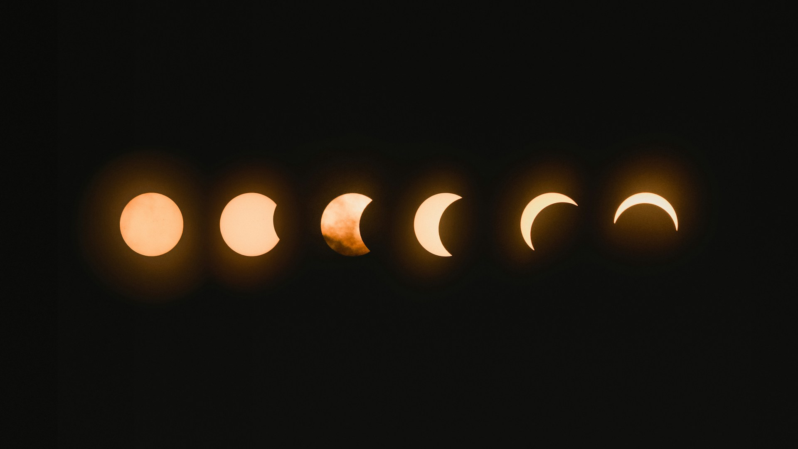
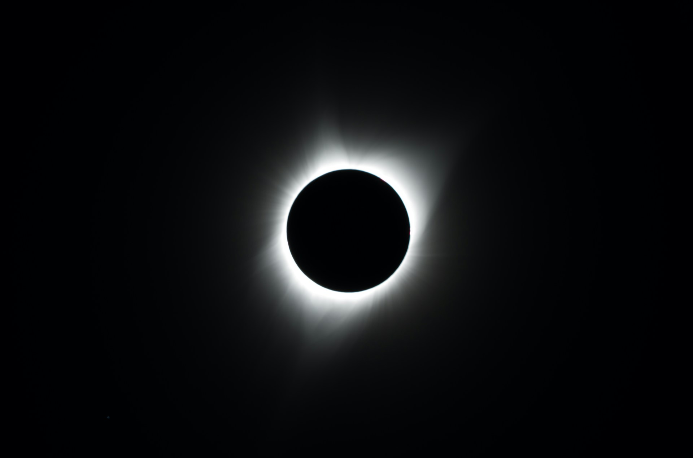

Total eclipse
April 8th (2:09 pm - 3:23 pm)
contact via email at: generic_email@gmail.com for more details
 
what is a solar eclipse?
A solar eclipse is a rare event that occurs when the moon blocks the sun. There are many kinds of eclipses including but not not limited to: Total Solar Eclipse, Annular Solar Eclipse, Partial Solar Eclipse, and Hybrid Solar Eclipse

Create memories with your loved ones!
Live is only so long, its sometimes hard to stay in the present. But big activities like a solar eclipse can certainly help. Try inviting friends over or have a solar eclipse party!

Engage in festivities
Festivities are a great way to stay connected and engage in your environment. You could make friends or be entertained simply by going out and viewing an eclipse in a public area that has a promotion for it.

Dont forget eyeprotection!
Dont burn your eyes. It can cause permanant damage, and could make you go blind. Wear glasses that are approved by the government and make sure you dont see anything when you wear them, it should be all black unless you're looking at the sun. Happy viewing!